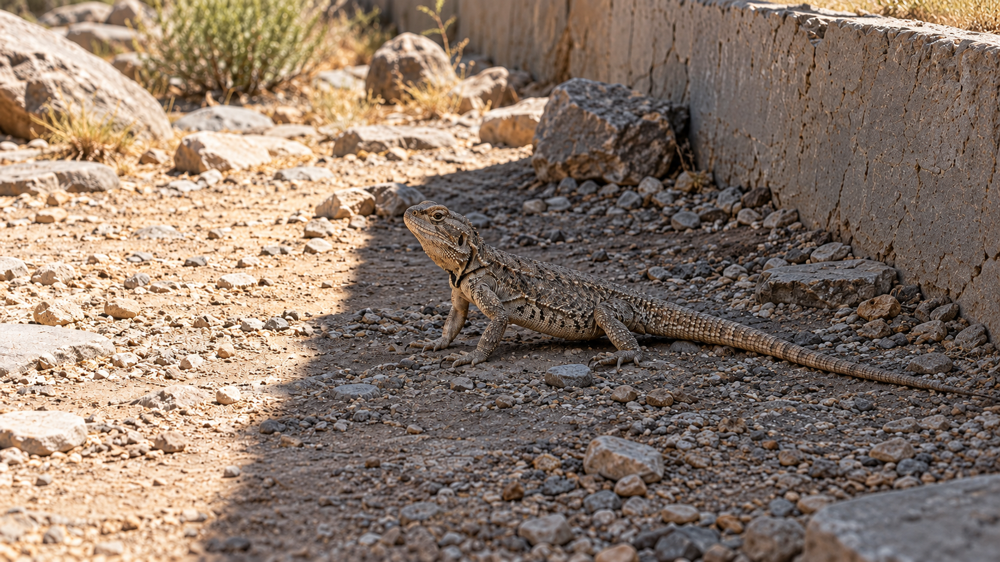
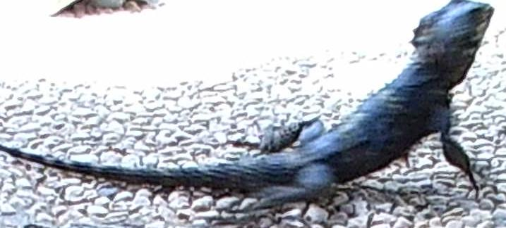
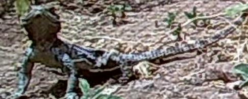

- 作者分類
- 陰影
- 拍攝時間
- 未提供
- 圍欄／個體
- 未提供
03-04 · 粗尾岩鬣蜥
照片很亮，蜥蜴就在曬太陽嗎？
先看牠站哪裡

旁邊的地面有日照蜥蜴停在陰影側
照片亮，不代表牠在日照裡


先看蜥蜴與近旁地面的光線。
先找蜥蜴，再看光線
長尾未完整入框
日照／陰影？
這張照片未附答案
色標是什麼？
這張照片未附答案
照片底部的相機印字不是蜥蜴體溫。圖中的框沿用作者標註。
每張照片，保留自己的紀錄
兩張照片各自呈現，不能確認是同一隻的前後時刻。
- 作者分類
- 日照
- 拍攝時間
- 未提供
- 圍欄／個體
- 未提供
不同圍欄可重複用色；只有色標，還不能跨圍欄確認個體。
作者驗證了什麼？
分類預測的信心門檻
95%約 85% 的預測達到門檻
這個比例表示有多少預測通過篩選，還不是分對多少。
通過門檻後，分類有多準
96.52%與人工標註比較
數字來自論文 §3.2 的分類評估，不是替這兩張照片打的分數。
沒有照片，就不知道牠在哪裡
沒有照片的時段
位置未知
停留多久，未知
相機沒拍到的時段，無法從照片補回不能補成全天停留時間
沒有直接量到蜥蜴體溫
蜥蜴靜止時，相機可能沒有拍照。連拍記錄到的時段，無法代表全天活動。
正在載入照片與作者標註。這支動畫沒有聲音。